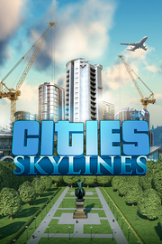

Cities Skylines
Detalles
|  | |
| Tiempo de juego | No Jugado |
| Última actividad | Nunca |
| Añadido | 11/5/2024 22:37:13 |
| Modificado | 2/5/2025 0:41:10 |
| Estado de finalización | No Jugado |
| Librería | Playnite |
| Fuente | 1 TB EXT |
| Plataforma | PC (Windows) |
| Fecha de lanzamiento | 3/10/2015 |
| Puntuación de la Comunidad | 92 |
| Puntuación de la Crítica | 85 |
| Puntuación de usuario | |
| Género | Estrategia Simuladores |
| Desarrollador | Colossal Order Ltd. |
| Editor | Paradox Interactive |
| Característica | Cloud Saves Cromos De Incluye Editor De Niveles Logros De Préstamo Familiar Remote Play En Tableta Un Jugador Workshop |
| Enlaces | Punto de encuentro Discusiones Guías Noticias Página de la tienda PCGamingWiki Logros Workshop |
| Tag | Acción Casuales Construcción Construcción de ciudades Divertidos Economía Estrategia Gestión Gestión de recursos Gran banda sonora Modernos Modificables Mods Para toda la familia Realistas Sandbox Simulación Tiempo real con pausas Un jugador Valor continuo |
Descripción
Cities: Skylines presenta un enfoque moderno para el clásico simulador urbano. Introduce nuevos elementos a la mecánica de juego para plasmar la emoción y las complicaciones de mantener una ciudad de verdad, ampliando al mismo tiempo algunos de los temas ya conocidos de la experiencia del desarrollo urbanístico.
De los creadores de la franquicia Cities in Motion, el juego presenta un completo sistema de transporte. Además permite aplicar mods para adaptarlo a tu propio estilo de juego, como contrapartida a la desafiante simulación por niveles. ¡El único límite es tu imaginación, así que toma el control y a por todas!


De los creadores de la franquicia Cities in Motion, el juego presenta un completo sistema de transporte. Además permite aplicar mods para adaptarlo a tu propio estilo de juego, como contrapartida a la desafiante simulación por niveles. ¡El único límite es tu imaginación, así que toma el control y a por todas!
Simulación en múltiples niveles
Es fácil empezar a construir tu ciudad desde abajo, pero dominar esto no es tarea fácil. Encarna al alcalde de tu ciudad y enfréntate a unos requisitos vitales para el equilibrio, como la educación, el agua, la electricidad, la policía, el parque de bomberos, el sistema de salud y muchas más cosas, todo dentro del sistema económico real de tu ciudad. Los ciudadanos de tu ciudad reaccionan rápida y seriamente, con gran autenticidad, a una gran variedad de escenarios de juego.Gestiona el tráfico local
La amplia experiencia de Colossal Orders durante el desarrollo de la serie Cities in Motion se ha aprovechado al máximo en un escenario totalmente desarrollado y lleno de detalles.Aplica leyes a los distritos
Llega más lejos que un simple administrador del ayuntamiento. Al designar un distrito en una parte específica de tu ciudad, se aplicarán políticas y ascenderás al puesto de alcalde de tu propia ciudad.